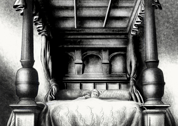

Listen to Part 1:
Tom quên đi nỗi muộn phiền
Tom dần học được cách trở thành một vị vua. Vài ngày sau, cậu bé bắt đầu tận hưởng cuộc sống mới. Giờ đây, cậu không còn sợ hãi và thích thú khi sống trong cung điện. Cậu thực sự thích khi bảo mọi người phải làm gì. Họ lắng nghe mọi điều cậu nói và làm mọi điều cậu yêu cầu. Không ai nghĩ cậu bị điên.
Tom thích ngủ trên chiếc giường lớn, êm ái. Khi muốn ngủ cả ngày, cậu bảo những người hầu rời khỏi và họ làm theo lời. Cậu ăn thịt gà trong mọi bữa ăn. Cậu thích mọi món ăn trong cung điện và không bao giờ thấy đói.

Giờ đây, Tom cũng thích có những người hầu vì mọi thứ vô cùng dễ dàng. Cậu không phải mặc quần áo, tắm rửa, cắt thức ăn, rót nước hay chuẩn bị đi ngủ. Những người hầu làm tất cả mọi thứ cho cậu. Cậu thích điều này đến nỗi cậu có thêm hàng trăm người hầu khác.
Cậu cũng thích những bộ quần áo đắt tiền và đã mua thêm rất nhiều. Quần áo của một vị vua trẻ tuổi thậm chí còn đẹp hơn quần áo của hoàng tử. Cậu có rất nhiều chiếc áo khoác đỏ và vàng được làm từ những chất liệu vô cùng đắt tiền. Tom cảm thấy thật tuyệt vời khi mặc chúng, y hệt một vị vua thực thụ!
Khi buồn chán, cậu đi dạo trong khu vườn lớn của cung điện cùng Quý cô Jane và Quý cô Elizabeth. Họ chơi trò chơi và trò chuyện. Hai cô gái trẻ rất thân thiện và hài hước. Tom thích họ.
Tom bận rộn đến nỗi không thường xuyên nghĩ về Edward hay gia đình của mình. Cậu hy vọng Edward vẫn hạnh phúc và nhớ mẹ và các chị gái. Nhưng cậu không muốn họ đến cung điện. Cậu không muốn trở thành một kẻ nghèo khổ lần nữa. Đôi khi, điều này khiến cậu cảm thấy tồi tệ. Rồi cậu lại mua một chiếc áo mới hoặc đi dạo trong khu vườn của cung điện và lại vui vẻ trở lại.